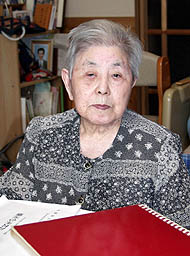
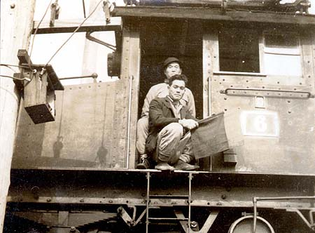
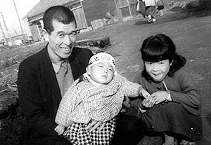

森永ヒ素ミルク公害との闘い
（聞き取り年月日場所：2008年6月7日 筑後市）

6月7日、博多駅からの特急有明7号が13時27分ＪＲ鹿児島本線羽犬塚駅に着くと、中川美津子さんの
娘さんが待っていてくれた。その駅から車で5分もかからない所に中川美津子さんの住まいがあった。
美津子さんは大正9年、大牟田市上町生まれ。昭和48年に夫・一実さんを病気で亡くして以来、大牟田で一人暮らしをしていたが、
ある時庭先で脳梗塞により倒れ、それ以来筑後市に住む娘さん夫婦の家で同居している。
車椅子に乗った美津子さんが出迎えてくれた。足が不自由になり週に2回ツエを使って歩くリハビリを受けているが、車椅子が便利で
手放せないと笑う。耳が少し遠くなったと言いながら、「何から話そうかと、娘と思案していました」と言うので、私も「何から聴いて
いいのか、ずっと考えていました」と答える。
森永ヒ素ミルクにより、昭和43年6月、14歳で三男の博ちゃんを亡くした美津子さんは、昭和45年三井三池炭鉱の電気機関車
運転手を定年退職した夫と共に、翌年から「森永ミルク中毒の子供を守る会」に入り、森永製品の「不買運動」や県境などでのビラ配り
をしながらヒ素ミルク公害の惨状を訴え続けてきた。「弁護士の中坊公平さんがいたから解決したようなもんですよ」と言い、「金を
もらおうというのではなく、この子たちの将来が心配であるから、闘ってきた」ときっぱりとそのときの決意を語る。
美津子さんは看護婦を経て、公立高校の養護教諭となり、大牟田北高校に25年間勤め、最後は三池高校で昭和55年春、59歳で
教職を退職した。
「私の学校に入学してきた学生服姿の生徒がウロウロしているのを見ると、もう悲しくてね、戦争で亡くなった子供、森永ミルクで
亡くなった子供を思い出す。博は昭和29年生まれ。生徒の中には、自分の子供と同じ博という名の生徒もいてね、その子が自分の子
供んごと気がしてしょうがなかった」。別の日、「子供たちの会に行くとね、遅れてきた子が、先生のそばがよかーと言って寄って
くれるんよ。その子はお母さんが死んで施設に預けられていた子だったんよ。知能がだいぶ低下した子供だったけどね、その子が
かわいくてかわいくて・・・。お母さんが元気な頃は一緒に運動をした仲だった」。
ヒ素ミルクの子供たちは今どうしているのかという私の問いに「結婚した人もいるが、そうでない人も多く、ごはんを炊く練習を
したりして自立を目指している人も多い」と言い、その近況を伝える財団法人ひかり協会発行の会報「ふれあい」が今も定期的に
送られてくるという。昭和30年に起こった森永ヒ素ミルク公害の被害児もいまや53歳になる。
美津子さんは大牟田北高校時代、福岡県下高等学校の養護部へも協力依頼をして、患者の掘り起こしとカンパ活動をしてきたが、
そんな中、福岡県久留米市にある、とある学校は「アンケートに書くことに反対」。その理由は「親や本人が嫌がるやろうから」という
ことだった。「思想の違い、なんでもその先生の考え方ひとつたい」と残念がる。
美津子さんは勤務日以外の土曜とか日曜に一人で被害者宅を探し回った。「正直大変だった。しかし、とにかくくやしかったから・・・。
森永のミルクを飲ましたという親の責任をずーっと感じていたから・・・」と胸の内を話す。
裁判闘争では、森永が九州大学の医者を巻き込み、五人委員会をつくり、介入してきた。事件発生から18年かかって、裁判はやっと
決着した。「苦しかったよ。でも、やってよかった」。その結果、森永ヒ素ミルク中毒の被害者を守る会と、厚生省、森永乳業との三者
会談の合意で、「寝たきりの患者が月に15万から20万の生活費をやっともらえるようになってくると、私も少し安心した」と成果を語り
ながらも、「しかし、自分の亡くなった子供のことを思うとき、かわいそうなことをしたなという思いでいっぱいだった」と、親として
の自責の念をいまもなお語る。「ある時、森永の労働組合からお見舞いとしてビスケットが送られてきたことがあった。しかし私は森永
という名前を聞いただけでイヤだったので、人にやった。会社から示談金5万円ぐらいをもらった人もいたようだが、私は受け取らなかっ
た」そうだ。
「子供を置いて家出したお母さんもいた」。「子供の結婚を考えて家の増築をした人もいた。しかし、日常生活がなかなかうまく出来
ない状態だったから、結局嫁さんをもらわずじまいだった」。そういう話を聞き、また、自分の子供のことを思うとき、「自分が
やらなければ」という使命感を感じて美津子さんは頑張ってきた。「しかし、決して私ひとりの力だけではなかった」と言い、「主人の
お母さんがいたから博を預け働きに出ることができた」。そのお母さんも69歳で亡くなり、代わってお手伝いさんに来てもらうことになった
が、当時中学2年生だった娘さんは、「お手伝いさんが来るのが遅れたときは、『もう学校に行かなければ遅れるから、博、行っていい』
というと、博は悲しそうな顔をしていたねえ」と、当時を振り返る。「みんなが博、中心だった」。お手伝いさんも3人代わり、「特に、
夏場ひきつけを起こすことが多かったので、大変だった」。最後は夫の妹さんに留守の間の介護を頼んだ。

「三池闘争との関わりはどうだったのか」と聞いてみた。「周りが新労へ流れるなか、夫は最後まで三池労組員だった」と言い、郵便
配達人が家の前を通る度、「きょうこそ解雇通知が来るのではないか」と思ったという。そのうちに全山無期限ストに入ると給料が全く
入らなくなり、被害児を抱えての生活は、まさしく「売り食いの生活」だった。そんな中、「第一と第二はどっちがえらいと？と、
娘がよく私に聞いてきたこともありました」と美津子さんが言い、そんなときは、「そりゃあ、こうこうだから、こうこうたいと、教え
てやった」と笑う。
社宅外からの通勤組だった中川さんらが、宮浦鉱の三井倶楽部の隣りに住んでいたときのこと。三池闘争のため三井倶楽部に寝泊り
していたたくさんの警官たちが、特に朝のトイレには困ったようで、私たち近所の民家にまでトイレを借りにきたこともあった。
また、三池労組員としてオルグで夫が家にいないことも度々あり、そんなときがモノも言えず動くことも出来なかった博ちゃんを抱えて
の生活が辛かった。
三池主婦会からの特別な支援はなかったが、昭和48年頃のメーデーのとき、三池ＣＯ中毒患者や、三池じん肺患者、スモン病患者等
の各団体代表と共に、夫も壇上に上がって森永ヒ素ミルク事件を訴えたこともあった。また、大牟田北高校の近くにあった、労働者のた
めにつくられた大牟田ハイツで森永事件の会議をしていたとき、たまたま同じ会館で三池主婦会の会議があり、お互いの代表がお互いの
会場へ顔を出して「がんばろう」とエールを交わしたこともあった。
「がんばろう」といえば、博ちゃんは荒木栄の労働歌「がんばろう」が好きだったという。「夫は博をひざに乗せてよく『がんばろう』
を歌っていた。七浦町に住んでいたときは、向こうの野添社宅事務所から朝になると『がんばろう』のうたが聴こえてきて、そのとき
博はよく喜んでいた」。
住まいが吉野の労災病院の隣りにあったときの話。「三井三池三川鉱大爆発により被災したＣＯ患者の受川孝さんの見舞いをある日三池
労組から頼まれた夫は、『博ば見るごとして、行きたくなかー』と言っていたこともあった」。そんなとき、荒木栄の「がんばろう」は、
美津子さんらにとって、自分たちに対する応援歌だったに違いない。
「七浦町にいたときは、夜、博が寝せんで泣くと、頭がボーッとなって、『えー、くそ』と思って炭鉱鉄道の線路の上に立っていたこと
もあった」と言う。

しかし、楽しいこともあった。「何時何分に電車が通るからと父が言うので、博を背負ってその時間に行くと、七浦町の眼下を走る
電車から『プーン』という汽笛を鳴らして手を振ってくれる父がいた。それを博が一番喜んだ」と娘さんが懐かしそうに話す。「兄の
健二が宮浦駅まで父の弁当を持っていくと、運転席に乗せてくれたときもありました」とも。
また、「博はお父さんの言うことならよくきいていた。テレビで巨人戦の野球をやっていたとき、『博、どちらが勝ったか、あとで
教えてくれよ』と言って父が出掛けると、学校から帰宅した私が漫画を観ようとチャンネルを変えると、博は怒った顔をよくしていた」
そうだ。
昭和28年、中川美津子さんは東京の豊島区にいた宮崎白蓮から手紙をもらったこともあった。荒尾市出身の宮崎龍介との間に生まれた
一粒種の子を学徒兵（早稲田大学・当時24歳）として戦争で亡くした白蓮が、「戦争のない平和な世界を」願って「万国悲母の会」を
結成していた。その入会の案内が書き記された手紙だった。
美津子さんもまた、旧満州国（現中国）からの引揚げ途中、長男を亡くしている。栄養失調の身体にハシカが感染。大事な毛布を売って
お金を工面し、木の下に埋めておいた子の屍を掘り起こして現地で火葬した。「振ればカサカサと音がする骨箱を一晩中抱いて寝た」。
そんな体験を、博ちゃんが亡くなったのちの昭和51年6月30日、「黄ばんだ雑記帖」というタイトルで本にして、500部自費出版した。
熊本厚生年金会館において、原田正純さんと二人で「公害に怒りを」という題目で講演したこともあった。「熊本には151名の患者
がいるのに、いっちょん患者としての申し出がなく、腹が立ってしょうがなかったけん、被害者がいるはずだから見つけてくださいと、
皆さんにお願いしたんよ」。
「いっときはあれも言いたい、これも言いたい、言いたいことばっかりで、森永の所へ飛んで行きたい気持ちだったばってん、今では
ちーとは胸がスッカリした」。しかし、「満州で死んだ子供より、やっぱり博がかわいそか。やはり自分でミルクを飲ませたから
ね。あれを飲ませんやったらねえ・・・」と最後まで森永に対するくやしい思いを語る。「今でもキャラメルにしろ、チョコレートに
しろ、森永の製品は一切買わない」。
今年11月で88歳になるという美津子さんは、まだまだ若々しい。顔にはシワがあっても、決して老けてはいない。いまだ生き生き
としている。米寿を迎えるようになっても、闘志みなぎる美津子さんは、強く美しい。 （まえかわ）
BACK
|